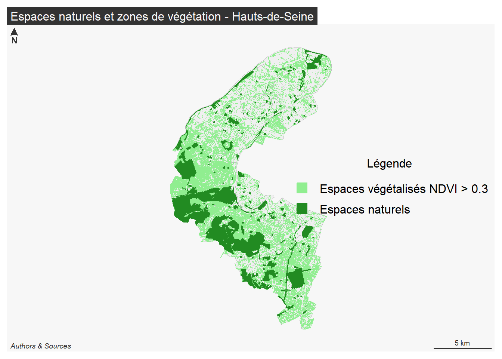

Projet SIG riche/pauvre : Les espaces verts et la végétation dans les Hauts-de-Seine
Nom du groupe : maleug
Composition du groupe :
- Simon Meyer-Mommaerts - Rédacteur
- Adel Abdelaziz Zeboudj - Technique
Sujet du projet : Les espaces verts et la végétation sont-ils un marqueur socio-économique ? Cas du département des Hauts-de-Seine
Résultats de l’étude:
1- RÉPARTITIONS DES ESPACES VERTS ET DE LA VÉGÉTATION AU NIVEAU DES HAUTS-DE-SEINE:
library(sf)
library(terra)
library(mapsf)
img = terra::rast("NDVIF.tiff")
communes_hds = sf::st_read("communes.shp", quiet = TRUE)
hds_contour = sf::st_transform(communes_hds, 2154) |> sf::st_union()
layer_v = img[[2]]
hds_terra = terra::vect(hds_contour)
ndvi_hds = terra::project(layer_v, sf::st_crs(hds_contour)$wkt) |>
terra::crop(hds_terra) |>
terra::mask(hds_terra)
ndvi_reel = -((ndvi_hds / 65535) * 2 - 1)
veg_mask = ndvi_reel > 0.3
veg_mask[veg_mask == 0] = NA
poly_veg_temp = terra::as.polygons(veg_mask, aggregate = TRUE)
poly_veg = sf::st_as_sf(poly_veg_temp)
poly_veg = sf::st_intersection(poly_veg, hds_contour)
espaces_naturels = sf::st_read("espaces-naturels-sensibles-ens-et-espaces-naturels-associes-ena.shp", quiet = TRUE)
espaces_naturels = sf::st_transform(espaces_naturels, 2154)
mf_theme("default")
mf_map(communes_hds, col = "#f0f0f0", border = "grey", lwd = 0.8)
mf_map(x = poly_veg, col = "lightgreen", border = "lightgreen", add = TRUE)
mf_map(x = espaces_naturels, col = "forestgreen", border = "forestgreen", lwd = 0.5, add = TRUE)
legend(
"right",
legend = c("Espaces végétalisés NDVI > 0.3", "Espaces naturels"),
fill = c("lightgreen", "forestgreen"),
border = c("lightgreen", "forestgreen"),
title = "Légende",
bty = "n"
)
mf_layout(title = "Espaces naturels et zones de végétation - Hauts-de-Seine", scale = TRUE, arrow = TRUE)
2-CLASSEMENT DES COMMUNES DE LA PLUS RICHE A LA PLUS PAUVRE SUIVANT LE TAUX DE RICHESSE :
| Indice de richesse | Commune | Revenu médian (€) | Dépenses/hab. 2024 (€) |
|---|---|---|---|
| 77.5 | Neuilly-sur-Seine | 48 010 | 3 094.4 |
| 71.3 | Le Plessis-Robinson | 31 000 | 4 959.6 |
| 64.6 | Vaucresson | 41 320 | 2 958.5 |
| 62.3 | Puteaux | 30 980 | 4 212.2 |
| 54.9 | Levallois-Perret | 34 500 | 3 109.0 |
| 52.0 | Saint-Cloud | 39 760 | 2 129.9 |
| 50.0 | Sceaux | 36 010 | 2 489.2 |
| 45.8 | La Garenne-Colombes | 33 090 | 2 549.3 |
| 45.7 | Bourg-la-Reine | 33 700 | 2 460.1 |
| 45.3 | Courbevoie | 32 080 | 2 651.1 |
| 45.0 | Garches | 36 150 | 2 058.3 |
| 44.6 | Rueil-Malmaison | 32 980 | 2 463.2 |
| 42.4 | Ville-d’Avray | 38 490 | 1 510.9 |
| 41.7 | Suresnes | 31 810 | 2 389.7 |
| 40.5 | Boulogne-Billancourt | 35 040 | 1 841.4 |
| 40.2 | Issy-les-Moulineaux | 33 650 | 2 004.9 |
| 39.7 | Clamart | 29 920 | 2 487.4 |
| 39.6 | Antony | 32 000 | 2 190.8 |
| 39.4 | Marnes-la-Coquette | 41 740 | 810.9 |
| 39.0 | Sèvres | 33 680 | 1 900.9 |
| 37.8 | Gennevilliers | 18 380 | 3 949.5 |
| 37.4 | Montrouge | 30 500 | 2 220.3 |
| 37.3 | Châtillon | 30 550 | 2 204.8 |
| 34.4 | Meudon | 30 680 | 1 941.8 |
| 33.2 | Vanves | 30 770 | 1 834.3 |
| 33.0 | Chaville | 32 290 | 1 599.7 |
| 30.7 | Nanterre | 21 620 | 2 904.1 |
| 30.1 | Colombes | 25 100 | 2 369.7 |
| 29.1 | Asnières-sur-Seine | 28 370 | 1 825.7 |
| 28.2 | Châtenay-Malabry | 27 140 | 1 926.8 |
| 27.5 | Clichy | 22 410 | 2 525.6 |
| 27.5 | Villeneuve-la-Garenne | 18 570 | 3 067.0 |
| 26.2 | Fontenay-aux-Roses | 26 990 | 1 782.9 |
| 26.2 | Malakoff | 25 810 | 1 941.8 |
| 20.5 | Bois-Colombes | 21 040 | 2 137.3 |
| 19.9 | Bagneux | 21 040 | 2 093.1 |
library(dplyr)
library(kableExtra)
tab1 = read.csv2("tableau1.csv")
tab1$Insee = as.character(tab1$Insee)
tab2 = read.csv2("tableau2.csv")
tab2$id = as.character(tab2$id)
tab_joint = tab1 |>
left_join(tab2, by = c("Insee" = "id")) |>
select(Insee, Nom, Montant_par_habitant_2024, Revenu_med)
tab_indice = tab_joint |>
mutate(
R_min = min(Revenu_med, na.rm = TRUE),
R_max = max(Revenu_med, na.rm = TRUE),
D_min = min(Montant_par_habitant_2024, na.rm = TRUE),
D_max = max(Montant_par_habitant_2024, na.rm = TRUE),
indice_richesse = (
((Revenu_med - R_min) / (R_max - R_min)) * 0.5 +
((Montant_par_habitant_2024 - D_min) / (D_max - D_min)) * 0.5
) * 100
) |>
select(Nom, Revenu_med, Montant_par_habitant_2024, indice_richesse) |>
mutate(indice_richesse = round(indice_richesse, 1)) |>
arrange(desc(indice_richesse))
kable(tab_indice,
col.names = c("Commune", "Revenu médian (€)", "Montant par habitant 2024 (€)", "Indice de richesse"),
caption = "Classement des communes par indice de richesse",
align = c("l", "c", "c", "c")
) |>
kable_styling(
bootstrap_options = c("striped", "hover", "condensed", "bordered"),
full_width = FALSE,
position = "center",
font_size = 13
) |>
row_spec(0, bold = TRUE, background = "#2d6a4f", color = "white") |>
column_spec(4, bold = TRUE, color = ifelse(tab_indice$indice_richesse > 50, "darkgreen", "black"))| Commune | Revenu médian (€) | Montant par habitant 2024 (€) | Indice de richesse |
|---|---|---|---|
| Neuilly-sur-Seine | 48010 | 3094.3927 | 77.5 |
| Le Plessis-Robinson | 31000 | 4959.5503 | 71.3 |
| Vaucresson | 41320 | 2958.4809 | 64.6 |
| Puteaux | 30980 | 4212.2215 | 62.3 |
| Levallois-Perret | 34500 | 3109.0393 | 54.9 |
| Saint-Cloud | 39760 | 2129.8577 | 52.0 |
| Sceaux | 36010 | 2489.2128 | 50.0 |
| La Garenne-Colombes | 33090 | 2549.2878 | 45.8 |
| Bourg-la-Reine | 33700 | 2460.1474 | 45.7 |
| Courbevoie | 32080 | 2651.0797 | 45.3 |
| Garches | 36150 | 2058.3338 | 45.0 |
| Rueil-Malmaison | 32980 | 2463.2252 | 44.6 |
| Ville-d’Avray | 38490 | 1510.8985 | 42.4 |
| Suresnes | 31810 | 2389.6953 | 41.7 |
| Boulogne-Billancourt | 35040 | 1841.3882 | 40.5 |
| Issy-les-Moulineaux | 33650 | 2004.9321 | 40.2 |
| Clamart | 29920 | 2487.4149 | 39.7 |
| Antony | 32000 | 2190.7606 | 39.6 |
| Marnes-la-Coquette | 41740 | 810.8579 | 39.4 |
| Sèvres | 33680 | 1900.9125 | 39.0 |
| Gennevilliers | 18380 | 3949.5328 | 37.8 |
| Montrouge | 30500 | 2220.3216 | 37.4 |
| Châtillon | 30550 | 2204.8251 | 37.3 |
| Meudon | 30680 | 1941.8293 | 34.4 |
| Vanves | 30770 | 1834.3003 | 33.2 |
| Chaville | 32290 | 1599.6931 | 33.0 |
| Nanterre | 21620 | 2904.1477 | 30.7 |
| Colombes | 25100 | 2369.7074 | 30.1 |
| Asnières-sur-Seine | 28370 | 1825.7191 | 29.1 |
| Châtenay-Malabry | 27140 | 1926.8140 | 28.2 |
| Villeneuve-la-Garenne | 18570 | 3066.9666 | 27.5 |
| Clichy | 22410 | 2525.5674 | 27.5 |
| Fontenay-aux-Roses | 26990 | 1782.8984 | 26.2 |
| Malakoff | 25810 | 1941.8426 | 26.2 |
| Bois-Colombes | 21040 | 2137.2600 | 20.5 |
| Bagneux | 21040 | 2093.1396 | 19.9 |
3- D’OCCUPATION DES SOLS PAR LA VÉGÉTATION ET LES ESPACES VERTS POUR CHAQUE COMMUNE
library(sf)
library(dplyr)
library(terra)
library(kableExtra)
communes_hds = sf::st_read("communes.shp", quiet = TRUE)
communes_hds = sf::st_transform(communes_hds, 2154)
espaces_naturels = sf::st_read("espaces-naturels-sensibles-ens-et-espaces-naturels-associes-ena.shp", quiet = TRUE)
espaces_naturels = sf::st_transform(espaces_naturels, 2154)
img = terra::rast("NDVIF.tiff")
hds_contour = sf::st_union(communes_hds)
layer_v = img[[2]]
hds_terra = terra::vect(hds_contour)
ndvi_hds = terra::project(layer_v, sf::st_crs(communes_hds)$wkt) |>
terra::crop(hds_terra) |>
terra::mask(hds_terra)
ndvi_reel = -((ndvi_hds / 65535) * 2 - 1)
veg_mask = ndvi_reel > 0.3
veg_mask[veg_mask == 0] = NA
poly_veg_temp = terra::as.polygons(veg_mask, aggregate = TRUE)
poly_veg = sf::st_as_sf(poly_veg_temp)
poly_veg = sf::st_transform(poly_veg, 2154)
surface_commune = communes_hds |>
mutate(surface_commune_ha = as.numeric(sf::st_area(geometry)) / 10000) |>
sf::st_drop_geometry() |>
select(nom, surface_commune_ha)
inter_veg = sf::st_intersection(poly_veg, communes_hds) |>
mutate(surface_veg_ha = as.numeric(sf::st_area(geometry)) / 10000) |>
sf::st_drop_geometry() |>
group_by(nom) |>
summarise(surface_veg_ha = sum(surface_veg_ha))
inter_en = sf::st_intersection(espaces_naturels, communes_hds) |>
mutate(surface_en_ha = as.numeric(sf::st_area(geometry)) / 10000) |>
sf::st_drop_geometry() |>
group_by(nom) |>
summarise(surface_en_ha = sum(surface_en_ha))
tableau = surface_commune |>
left_join(inter_veg, by = "nom") |>
left_join(inter_en, by = "nom") |>
mutate(
surface_veg_ha = ifelse(is.na(surface_veg_ha), 0, surface_veg_ha),
surface_en_ha = ifelse(is.na(surface_en_ha), 0, surface_en_ha),
taux_vegetation = round((surface_veg_ha / surface_commune_ha) * 100, 1),
taux_espaces_naturels = round((surface_en_ha / surface_commune_ha) * 100, 1)
) |>
select(nom, taux_vegetation, taux_espaces_naturels) |>
arrange(desc(taux_vegetation))
colnames(tableau) = c("Commune", "Taux de végétation (%)", "Taux d'espaces naturels (%)")
kable(tableau,
col.names = c("Commune", "Taux de végétation (%)", "Taux d'espaces naturels (%)"),
caption = "Classement des communes par taux de végétation",
align = c("l", "c", "c")
) |>
kable_styling(
bootstrap_options = c("striped", "hover", "condensed", "bordered"),
full_width = FALSE,
position = "center",
font_size = 13
) |>
row_spec(0, bold = TRUE, background = "#2d6a4f", color = "white") |>
column_spec(2, color = ifelse(tableau[,2] > 50, "forestgreen", "black"), bold = TRUE) |>
column_spec(3, color = ifelse(tableau[,3] > 20, "darkgreen", "black"))| Commune | Taux de végétation (%) | Taux d’espaces naturels (%) |
|---|---|---|
| MARNES LA COQUETTE | 82.5 | 67.6 |
| VILLE D AVRAY | 79.2 | 62.9 |
| VAUCRESSON | 68.3 | 12.6 |
| MEUDON | 64.2 | 40.8 |
| CHAVILLE | 62.2 | 46.4 |
| SAINT CLOUD | 61.3 | 40.8 |
| CHATENAY-MALABRY | 56.1 | 30.6 |
| SCEAUX | 53.1 | 33.3 |
| SEVRES | 53.0 | 27.2 |
| RUEIL MALMAISON | 49.5 | 19.0 |
| GARCHES | 47.1 | 2.5 |
| CLAMART | 41.6 | 27.9 |
| ANTONY | 31.6 | 11.1 |
| LE PLESSIS ROBINSON | 31.6 | 13.1 |
| FONTENAY AUX ROSES | 31.3 | 4.7 |
| BAGNEUX | 28.3 | 18.3 |
| SURESNES | 25.2 | 6.4 |
| VILLENEUVE LA GARENNE | 23.7 | 13.7 |
| NEUILLY SUR SEINE | 22.5 | 1.5 |
| BOURG LA REINE | 22.3 | 0.0 |
| ISSY LES MOULINEAUX | 17.7 | 8.6 |
| CHATILLON | 17.5 | 2.9 |
| NANTERRE | 16.4 | 6.0 |
| VANVES | 15.5 | 3.2 |
| GENNEVILLIERS | 14.6 | 6.2 |
| MALAKOFF | 13.1 | 0.6 |
| PUTEAUX | 13.1 | 2.6 |
| BOULOGNE BILLANCOURT | 12.9 | 5.1 |
| COLOMBES | 12.4 | 5.0 |
| ASNIERES-SUR-SEINE | 9.6 | 2.2 |
| CLICHY | 9.5 | 3.0 |
| BOIS COLOMBES | 8.8 | 2.3 |
| COURBEVOIE | 8.8 | 3.7 |
| MONTROUGE | 8.5 | 0.9 |
| LEVALLOIS PERRET | 8.2 | 4.3 |
| LA GARENNE COLOMBES | 6.8 | 0.3 |
library(dplyr)
library(ggplot2)
library(sf)
library(terra)
communes_hds = sf::st_read("communes.shp", quiet = TRUE)
communes_hds = sf::st_transform(communes_hds, 2154)
communes_hds$id = as.character(communes_hds$id)
espaces_naturels = sf::st_read("espaces-naturels-sensibles-ens-et-espaces-naturels-associes-ena.shp", quiet = TRUE)
espaces_naturels = sf::st_transform(espaces_naturels, 2154)
img = terra::rast("NDVIF.tiff")
hds_contour = sf::st_union(communes_hds)
layer_v = img[[2]]
hds_terra = terra::vect(hds_contour)
ndvi_hds = terra::project(layer_v, sf::st_crs(communes_hds)$wkt) |>
terra::crop(hds_terra) |>
terra::mask(hds_terra)
ndvi_reel = -((ndvi_hds / 65535) * 2 - 1)
veg_mask = ndvi_reel > 0.3
veg_mask[veg_mask == 0] = NA
poly_veg_temp = terra::as.polygons(veg_mask, aggregate = TRUE)
poly_veg = sf::st_as_sf(poly_veg_temp)
poly_veg = sf::st_transform(poly_veg, 2154)
surface_commune = communes_hds |>
mutate(surface_commune_ha = as.numeric(sf::st_area(geometry)) / 10000) |>
sf::st_drop_geometry() |>
select(nom, id, surface_commune_ha)
inter_veg = sf::st_intersection(poly_veg, communes_hds) |>
mutate(surface_veg_ha = as.numeric(sf::st_area(geometry)) / 10000) |>
sf::st_drop_geometry() |>
group_by(nom) |>
summarise(surface_veg_ha = round(sum(surface_veg_ha), 2))
inter_en = sf::st_intersection(espaces_naturels, communes_hds) |>
mutate(surface_en_ha = as.numeric(sf::st_area(geometry)) / 10000) |>
sf::st_drop_geometry() |>
group_by(nom) |>
summarise(surface_en_ha = round(sum(surface_en_ha), 2))
tab1 = read.csv2("tableau1.csv")
tab1$Insee = as.character(tab1$Insee)
tab2 = read.csv2("tableau2.csv")
tab2$id = as.character(tab2$id)
tab_joint = tab1 |>
left_join(tab2, by = c("Insee" = "id")) |>
select(Insee, Montant_par_habitant_2024, Revenu_med)
donnees = surface_commune |>
left_join(inter_veg, by = "nom") |>
left_join(inter_en, by = "nom") |>
left_join(tab_joint, by = c("id" = "Insee")) |>
mutate(
surface_veg_ha = ifelse(is.na(surface_veg_ha), 0, surface_veg_ha),
surface_en_ha = ifelse(is.na(surface_en_ha), 0, surface_en_ha),
taux_vegetation = round((surface_veg_ha / surface_commune_ha) * 100, 1),
taux_espaces_naturels = round((surface_en_ha / surface_commune_ha) * 100, 1),
R_min = min(Revenu_med, na.rm = TRUE),
R_max = max(Revenu_med, na.rm = TRUE),
D_min = min(Montant_par_habitant_2024, na.rm = TRUE),
D_max = max(Montant_par_habitant_2024, na.rm = TRUE),
indice_richesse = (
((Revenu_med - R_min) / (R_max - R_min)) * 0.5 +
((Montant_par_habitant_2024 - D_min) / (D_max - D_min)) * 0.5
) * 100
) |>
arrange(indice_richesse)
donnees$nom = factor(donnees$nom, levels = donnees$nom)
donnees_long = donnees |>
select(nom, taux_vegetation, taux_espaces_naturels) |>
tidyr::pivot_longer(
cols = c(taux_vegetation, taux_espaces_naturels),
names_to = "type",
values_to = "taux"
) |>
mutate(type = ifelse(type == "taux_vegetation", "Végétation NDVI > 0.3", "Espaces naturels"))
ggplot(donnees_long, aes(x = nom, y = taux, fill = type)) +
geom_col(position = "dodge") +
scale_fill_manual(values = c("Végétation NDVI > 0.3" = "lightgreen", "Espaces naturels" = "forestgreen")) +
labs(
title = "Taux de végétation et d'espaces naturels par commune",
subtitle = "Classement de la commune la plus pauvre à la plus riche",
x = "Communes (de la plus pauvre à la plus riche)",
y = "Taux (%)",
fill = "Type"
) +
theme_minimal() +
theme(
axis.text.x = element_text(angle = 45, hjust = 1, size = 8),
plot.title = element_text(face = "bold", size = 13),
legend.position = "top"
)